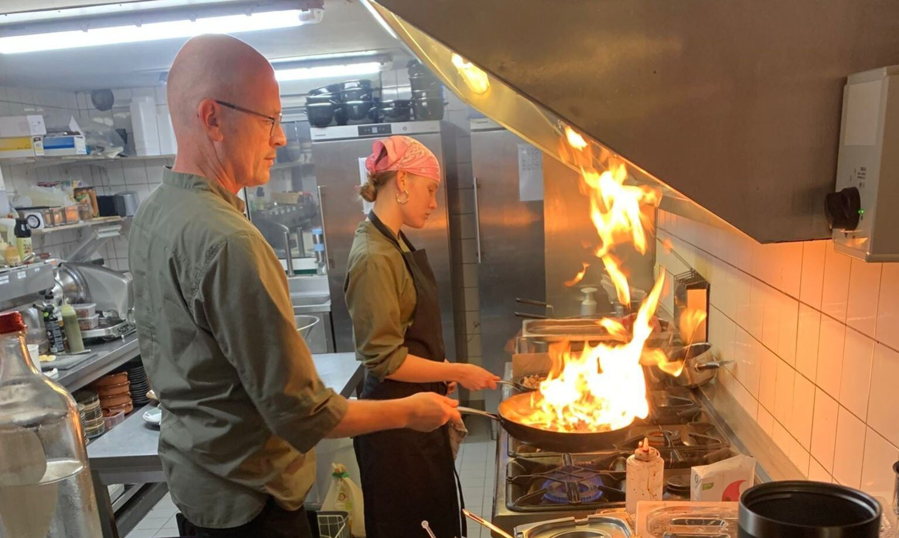
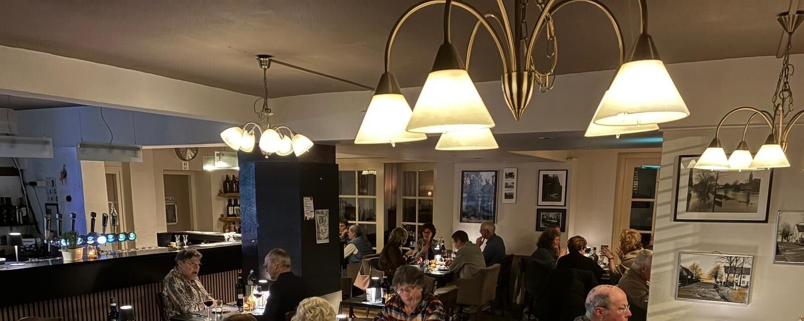

Eten, drinken, genieten aan de Maas
Brasserie
't Vaerhóes
Een familiebrasserie in een monumentaal pand in kloosterdorp Steyl. Lunch, diner en een groot, zonnig terras aan de Mooder Maas.
Gastvrijheid en historie, samen aan de Maas
Tussen het decor van de kloosters in Steyl ligt aan de Maas het monumentale pand 't Vaerhóes. Een begrip voor velen uit de omgeving, naast het missiehuis waar Arnoldus Janssen begraven ligt.
“Wat ooit begon als een droom is nu werkelijkheid geworden: samen met onze kinderen en onze toegewijde medewerkers een restaurant runnen met heel veel liefde en passie. Net als in het programma ‘Het Roer Om’ kozen we voor dit nieuwe avontuur. Geniet van onze gerechten en voel jullie onderdeel van onze warme familie.”
- Ruud
- eigenaar
Met kruiden en eetbare planten van Roberts Kruidentuin hier in Steyl, en ijs van IJsco Fantastico uit Venlo.

De kaart
Met de gerechten zoals ze hier heten: in het Steyls. Van suupke tot duuvelkesvleis, van oetsmieter tot Nonnenplezier.
Woensdag t/m zondag van 11.30 tot 16.00 uur. Vanaf 16.00 uur begint de dineravond.
Woensdag t/m zondag, de keuken is open tot 20.00 uur. Keuze uit vlees-, vis- en vegetarische gerechten.
IJs van IJsco Fantastico uit Venlo.
Bij een fles wijn krijgt u een gratis fles tafelwater.
Voor bij een glas, binnen of op het terras.
Voor een vlotte service rekenen wij enkel per tafel af. Heeft u een allergie of dieetwens? Laat het ons weten.
Originele kaarten: lunchkaart, dinerkaart, drankenkaart en allergenenlijst 2026.
Thema-avonden
Avonden met een eigen menu, rond één thema. Alleen op reservering; inloop vanaf 18.00 uur.
Visavond
Drie rondes van twee visgerechten.
Wildavond
Een wildmenu van vijf gangen.
Steakavond
Keuze uit tien soorten steaks, met een proefplank.
Een plek reserveren? Laat het ons weten of bel 077 373 44 95.
Groepen, feesten en koffietafels
Voor grote partijen, vergaderingen, teamuitjes, bruiloften en koffietafels zorgen we voor catering op maat, een sfeervolle feestlocatie en een menu dat bij uw gezelschap past.
- Gezelschappen vanaf 9 personen dineren met een aangepast dinermenu.
- Lunchen met meer dan 8 personen? Neem even contact op via mail of telefoon.
- Lopend buffet, 3-gangenmenu of barbecue, afgestemd op uw gelegenheid.
- Koffietafels: traditioneel met koffie, thee en vlaai, luxe met broodjes en soep, of helemaal op maat.
- Dieet- en allergiewensen houden we graag rekening mee.


Een zonnig terras aan de Mooder Maas
Een groot terras met uitzicht op het plein met het beeld De Zaaier, in het hart van kloosterdorp Steyl. Perfect voor een ontspannen moment, om bij te praten of gewoon even tot rust te komen. Is het gezellig druk op het terras, dan gaan we later dicht.
Fietsen stallen kan bij ons, en u parkeert gratis.
Steyler geschiedenis
In 1875 stichtte pater Arnold Janssen in Steyl het eerste Duitse missiehuis. In Duitsland mochten door de ‘Kulturkampf’ geen kloosters bestaan, dus kwam hij naar Nederland. Vanuit hier groeiden de Steyler Missiën uit tot een beweging over alle werelddelen. In 2003 werd Arnold Janssen heilig verklaard; hij ligt begraven in het missiehuis naast ons.
Het beeld De Zaaier op het plein werd in 1928 onthuld en gemaakt door Atelier Jos Thissen uit Roermond. Het zaaien staat voor het verspreiden van geloof, kennis en hoop: precies wat de missionarissen vanuit Steyl gingen doen.
Lees het hele verhaal
Arnold Janssen werd op 5 november 1837 in Goch (Duitsland) geboren, als tweede kind van voerman Gerhard Janssen en Anna Katherina. Hij groeide op met vijf broers en twee zussen in een vroom katholiek gezin, waar ’s avonds de rozenkrans werd gebeden voor de noden van de wereldkerk.
Hij studeerde wiskunde en natuurwetenschappen in Münster en Bonn, daarna theologie, en werd in 1861 in Münster tot priester gewijd. Twaalf jaar gaf hij les aan de hogere burgerschool in Bocholt en zette hij zich in voor het Gebedsapostolaat. Later werd hij rector bij de Ursulinen in Kempen en gaf hij vanaf 1874 het tijdschrift “Kleiner Herz-Jesu-Bote” uit.
Op 8 september 1875 stichtte hij in Steyl het eerste Duitse missiehuis. “In een tijd waarin zoveel ten gronde gaat, moet iets nieuws ontstaan!” 34 jaar leidde hij het Gezelschap van het Goddelijk Woord. Met hem stichtten vrouwen in 1889 de Missiezusters en in 1895 de Aanbiddingszusters van Steyl.
In 1909, zijn sterfjaar, werkten er al 1500 priesters, broeders en zusters in onder meer China, Argentinië, Brazilië, de Verenigde Staten, de Filipijnen, Japan en Papua-Nieuw-Guinea. Tegenwoordig horen meer dan tienduizend priesters, broeders en zusters uit alle continenten tot deze Arnold Janssen-familie.
Pater Arnoldus vestigde in 1875 het missiehuis St. Michael, het beginpunt van de missiecongregaties. Het beeld De Zaaier is daarom zowel religieus-symbolisch als historisch: een eerbetoon aan de duizenden missionarissen die vanuit Steyl naar alle continenten vertrokken.
In Goch is de Arnold-Janssen-Stadtrundgang uitgezet langs zijn parochiekerk, geboortehuis en monument. Vanuit Goch loopt de Arnold-Janssen-Weg naar Steyl, waar naast de door hem gestichte missiekloosters ook zijn graf ligt.
Reserveren & openingstijden
Reserveer via het formulier, per e-mail of telefonisch. We zien u graag in Steyl.
| Maandag | gesloten |
|---|---|
| Dinsdag | gesloten |
| Woensdag | 11.00 – 21.00 |
| Donderdag | 11.00 – 21.00 |
| Vrijdag | 11.00 – 21.00 |
| Zaterdag | 11.00 – 21.00 |
| Zondag | 11.00 – 21.00 |
Keuken open van 11.30 tot 20.00 uur. Lunch tot 16.00 uur, daarna diner. Bij drukte op het terras zijn we later open; op feestdagen kunnen de tijden afwijken.
- 077 373 44 95
- info@vaerhoes.nl
- Veerweg 18, 5935 BK Steyl